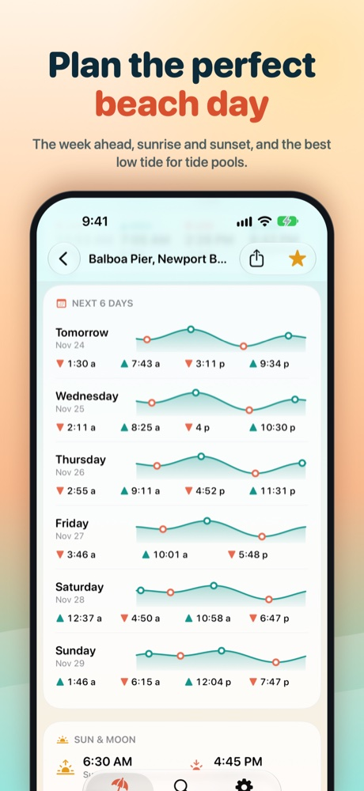
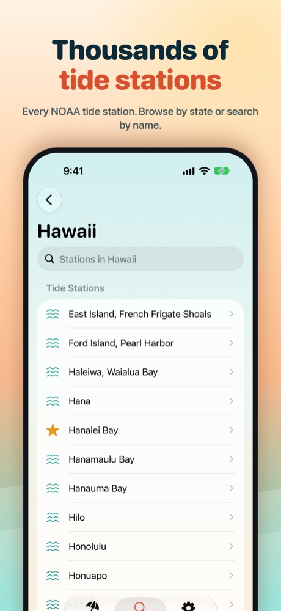
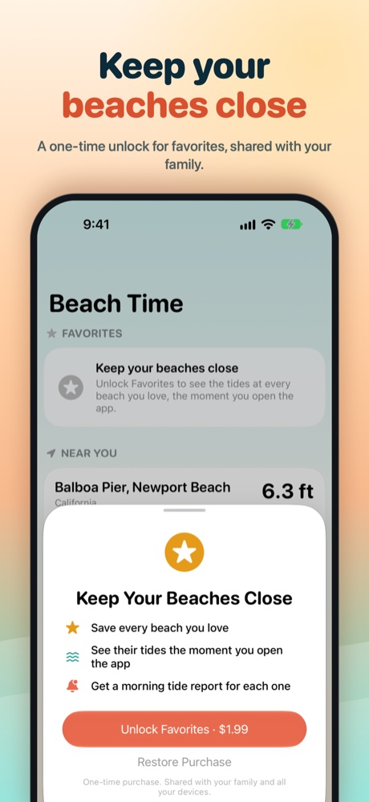
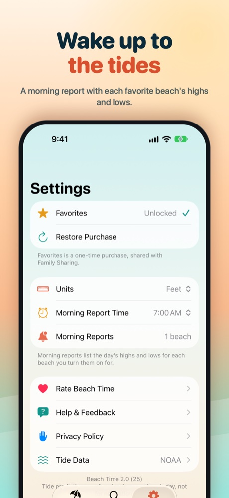

Beach Time
Tides for your next beach day
Know the tide before you go. Live tides, the week ahead, and sunrise to sunset for every NOAA tide station in the U.S.






Features
- Your beaches, at a glance Favorite and nearby beaches, each with its live tide.
- Know when the tide turns Live height, rising or falling, and the whole day's tide curve.
- Plan the perfect beach day The week ahead, sunrise and sunset, and the best low tide for tide pools.
- Every NOAA tide station Browse by state, or search by beach name, city, or ZIP code.
- Favorites A one-time unlock to keep your beaches close, shared with Family Sharing.
- Morning tide reports Wake up to a notification with each favorite beach's highs and lows.
Support
Questions, bugs, or ideas? Reach me on LinkedIn. Include your device and iOS version if something's broken.